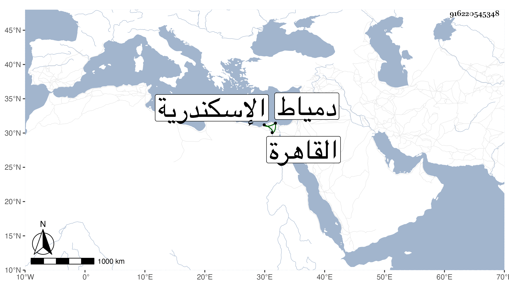

0902Sakhawi.DawLamic.ITO20230111-ara1.EIS1600.916220545348
Biography ID: 916220545348
إبراهيم بن محمد بن علي بن أحمد بن أبي بكر بن شبل بن محمد بن خزيمة بن عنان بن محمد بن مدلج ووجد في مكان آخر بعد علي ابن محمد ابن أبي بكر بن عنان بن شبل بن أبي بكر بن محمد فالله أعلم . البرهان بن الشمس العدوي النحريري الشافعي الرفاعي ويعرف بابن البديوي . ولد بعد سنة ثمانين وسبعمائة بالنحرارية وقرأ بها القرآن وصلى به والعمدة والتبريزي وألفية ابن مالك وقال أنه يعرض على السراجين البلقيني وابن الملقن وبحث في التبريزي والألفية على النور علي بن مسعود النحريري وولده الشمس وأخبر أنه سمع الشفا بأفوات قبل القرن بيسير على قاضي النحرارية البرهان إبراهيم بن أحمد بن البزاز الأنصاري الشافعي بسماعه له على ابن جابر الوادياشي سنة أربع وأربعين وسبعمائة . وحج في سنة خمس وعشرين وتردد إلى القاهرة والاسكندرية مرارا وكذا ارتحل إلى دمياط لزيارة الصالحين وعني بنظم الشعر وسلك طريق ابن نباتة ففاق والده في ذلك وكذا حل المترجم كأبيه إلا أن والده كان قد فاق أهل عصره فيه سيما وهذا لم يجد من مدة متطاولة من يذاكره فيه ولا من يكتب له فيه شيئا وقد لقيه ابن فهد والبقاعي وكتبا عنه من نظمه وقال ثانيهما أنه رآه مشتملا على اللطافة الزائدة والذهن السيال وإدراك النكتة الأدبية بسرعة وحلاوة النادرة ومما كتباه عنه ما أنشده بالحجرة النبوية :
| نادى منادي الصفا أهل الوفا زوروا | بشراك قلبي ما هذا الندا زور |
| قم شقة البين والهجران قد طويت | وأسود الصد بعد الطول مقصور |
| يممت نحو الحمى يا صاح مجتهدا | وللذيول بصدق العزم تشمير |
وهي طويلة وأخبرهما قال أخبرني الشيخ شمس الدين البيطار قال توجهت صحة الشيخ يوسف العجمي إلى زيارة الشيخ يحيى الصنافيري وكان مجذوبا لا تنضبط أحواله فتلقانا خارج باب الاسكندرية ثم قال يا يوسف :
| ألم تعلم بأني صيرفي | أحك الأصدقاء على محك |
| فمنهم بهرج لا خير فيه | ومنهم من أجوزه بشك |
| وأنت الخالص الذهب المصفى | بتزكيتي ومثلي من يزكى |
مات في جمادى الأولى سنة إحدى وستين بالنحرارية .
